CS180 Project 2
Results
1. Defining Correspondences
Here's an example of some manually labeled keypoints and the corresponding triangulation.
For this project, throughout, we used the Delaunay triangulation.
Note of course that the keypoints need to be labeled in a specific order in order to draw correspondences in later sections.
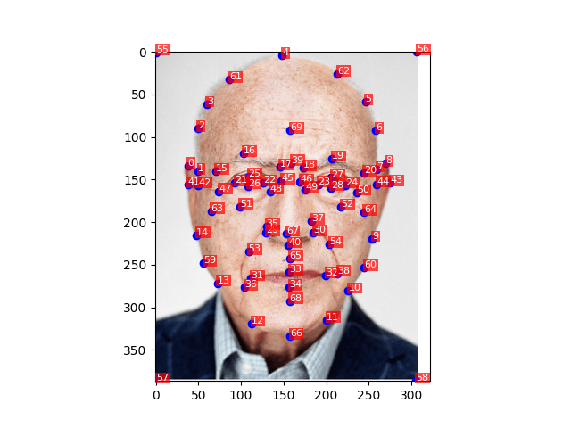
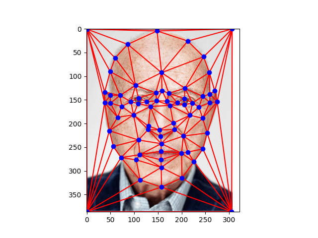
3. The Morph Sequence
This is the result of basically doing the same operation as above, but weighting the two images differently and varying the weight over time.

4. The Mean Face of a Population
This is the mean face of a a dataset of 100 faces from the FEI face database.
Faces in this dataset were cropped and normalized in various ways so that corresponding features are in approximately the same locations in each image. (The dataset came with keypoints, so we didn't need to manually label our own.)
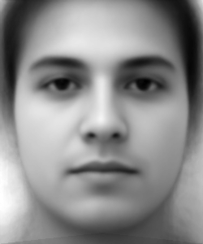
Here are several examples from the dataset, followed by the result of warping their features to match the mean face.
 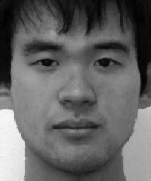
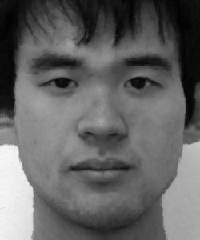
 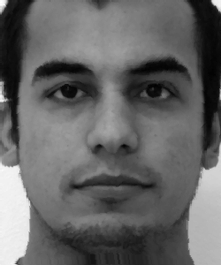
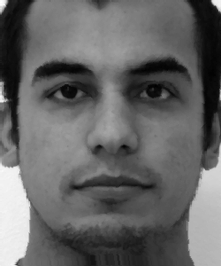
 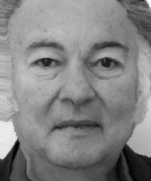
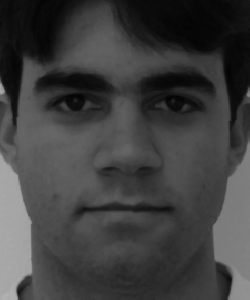
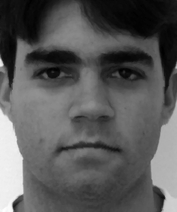
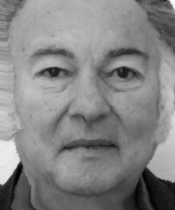
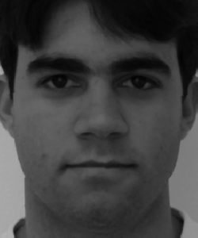
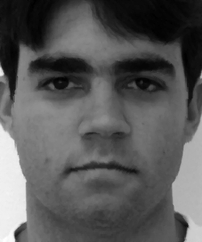
 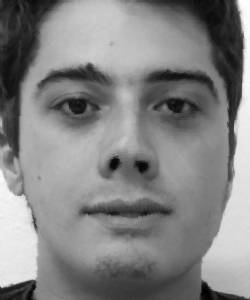
Furthermore, here is my own face warped to match the mean face:
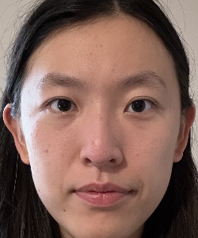
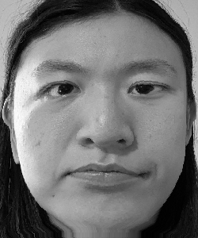
and the mean face warped to match my own:
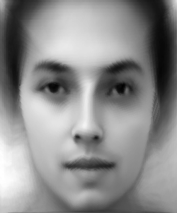
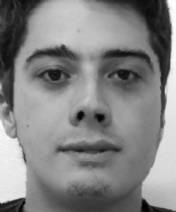
Furthermore, here is my own face warped to match the mean face:
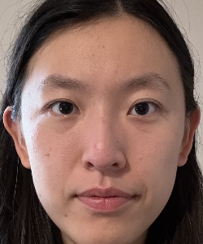
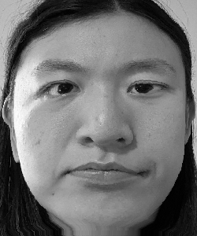
and the mean face warped to match my own:
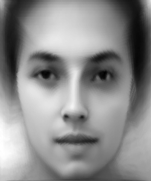
5. Caricature
This is the result of simply allowing the weights applied in the morph to obtain values outside of (0, 1):
This is an extreme version of my face:
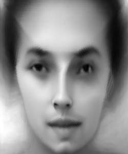
And an even more extreme version:
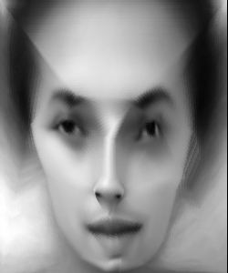
Note that the results with respect to skin tone aren't very profound; the dataset as given was in grayscale.
6. PCA Caricature
I applied PCA to the same dataset, using the simple pixel values as features (i.e, thinking of the flattened image as a vector and performing PCA across a list of such vectors).
Here are some of the "eigenfaces":
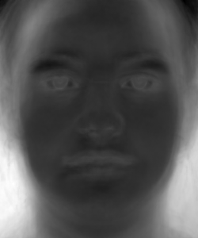
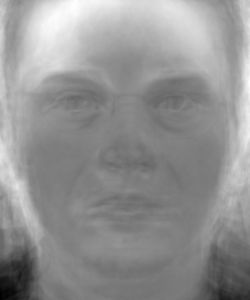
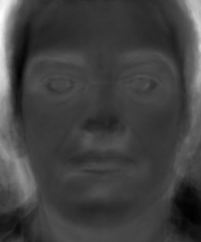
Here is an example datapoint from the dataset reconstructed using the PCA basis:
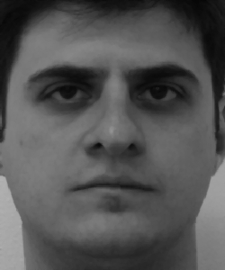
Unsurprisingly, it exactly matches the original image, because I used the entire basis for the reconstruction.
The reconstruction with only the first 10 eigenvectors is substantially murkier, but clearly contains features of the original image:
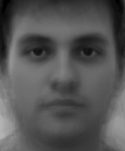
Here's a caricature of this guy using the PCA basis (scaling factor 1.5):
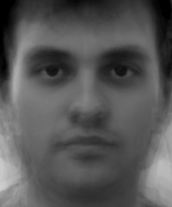
And one with a scaling factor of 3:
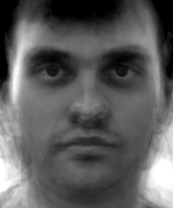
These aren't really caricatures in the traditional sense, but they do seem to emphasize some features of the original image.
This is of course what you'd expect. The previous method's caricatures explicitly modify the shapes of faces, whereas the notion of features on this one is a lot less directly shape-related.
However, here's the reconstruction of my own face on the first 10 eigenvectors:
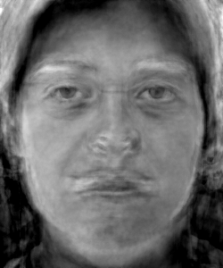
It's substantially worse, which surprised me. I think one of the potential reasons is that the dataset isn't that large, so perhaps my face may exhibit features substantially different from those in the dataset, and some of the important ones get destroyed by the projection into the PCA basis. (At least the hair seems to be preserved, and the general face shape is there.)
I have seen better looking PCA caricatures, so I wonder if this is partly because this dataset was in grayscale, so there aren't color related features for PCA to extract, and this somehow affects the typical features here.
For completeness, here's a caricature of me using the PCA basis anyway:
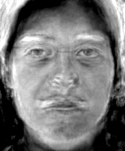
It's not very good; it looks fairly similar to the original image. Increasing the scaling factor doesn't make a qualitative difference.